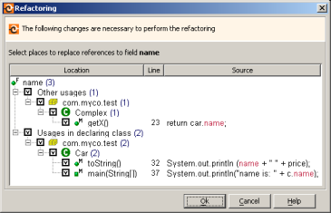

Encapsulate Field creates 'getters' and 'setters' for a field and is additionally capable of replacing usages of the field by invocations of the new `getters' and `setters.'
To use this command, click the desired field and run Encapsulate Field, then choose names for the getter and setter. In addition, you can change visibility of the field itself. For example, you can make the field private, thus forcing clients to use getters and setters. When you are done, click OK to continue with encapsulation.
RefactorIT lists all usages of the field in the source path. You can choose which occurrences get replaced by calls to the getter or setter and which remain unchanged.
When you are done with the following dialog, click OK to complete encapsulation.

Self-Encapsulate Field in Martin Fowler's online catalog of refactoring operations